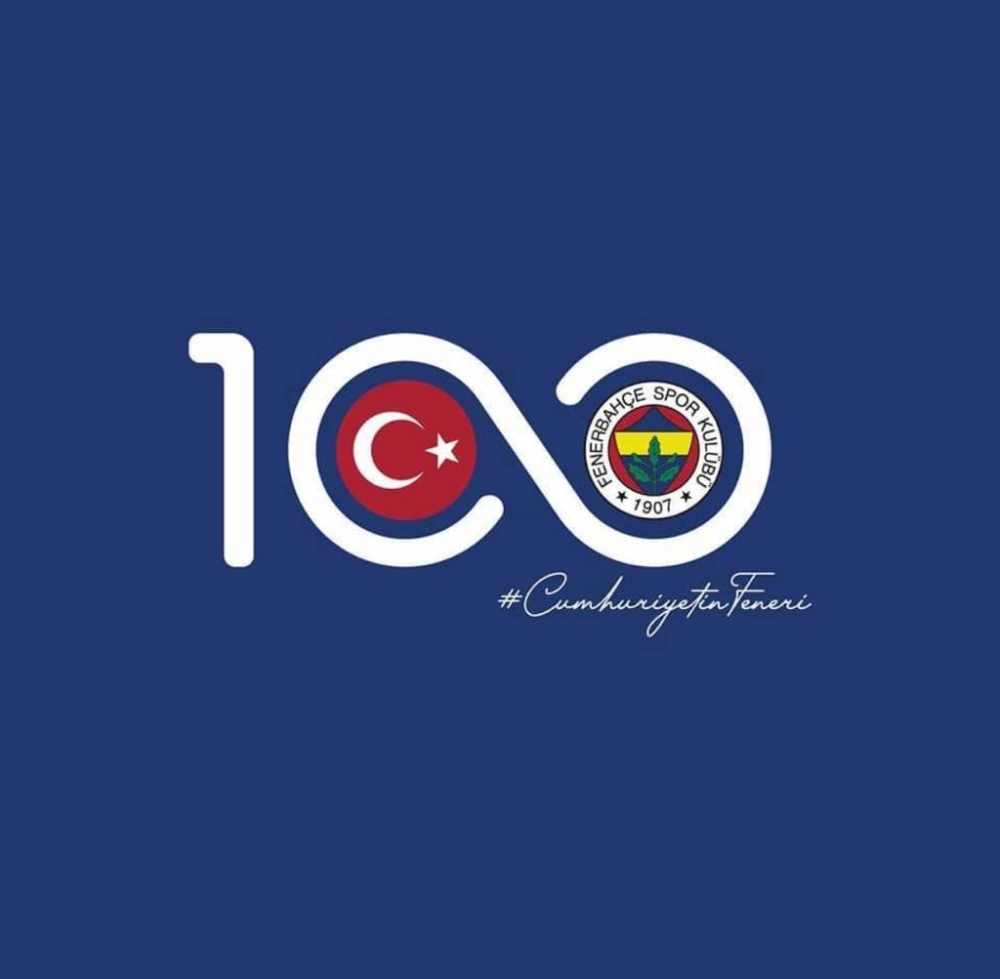

Here, you will learn the vast history of Fenerbahce!
How it All Started
In 1907, a group led by Nurizade Ziya Songülen in Istanbul founded Fenerbahçe, initially centered around futbol and known for their yellow jerseys. It began as a small initiative but quickly expanded, evolving into a sports and cultural institution in Turkey.
